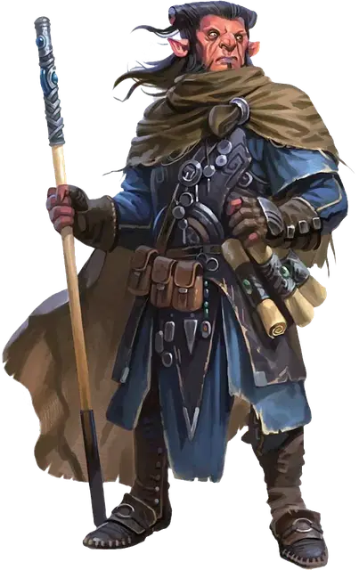

Хобгоблин опустошитель
Hobgoblin Devastator
Средняя Фея (Гоблиноид), обычно законно-нейтральная

Класс Доспеха 13 (клепанная кожа)
Хиты 45 (7к8 + 14)
Скорость 30 футов
| мод | спас | ||
|---|---|---|---|
| СИЛ | 13 | +1 | +1 |
| ЛОВ | 12 | +1 | +1 |
| ТЕЛ | 14 | +2 | +2 |
| мод | спас | ||
|---|---|---|---|
| ИНТ | 16 | +3 | +3 |
| МДР | 13 | +1 | +1 |
| ХАР | 11 | +0 | +0 |
Навыки Магия +5
Чувства тёмное зрение 60 футов, пассивное Восприятие 11
Языки Общий, Гоблинский
Опасность 4 (1100 опыта)
Бонус мастерства +2
Среда обитания Лес, Луг, Холмы
Особенности
Армейская магия. . Когда хобгоблин накладывает заклинание, которое наносит урон или заставляет других существ пройти спасбросок, то он может выбрать себя и любое количество союзников и дать им иммунитет от урона заклинания или успех в требуемом спасброске.
Действия
Мультиатака. Хобгоблин совершает две атаки Посохом или Разрушительным снарядом.
Посох. . Рукопашная атака оружием: +3 к попаданию, досягаемость 5 футов, одна цель. Попадание: 4 (1к6 + 1) дробящего урона, или 5 (1к8 + 1) дробящего урона при использовании обеими руками, плюс 13 (3к8) урона силовым полем.
Разрушительный снаряд. Дальнобойная атака заклинанием: +5 к попаданию, дистанция 60 футов, одна цель. Попадание: 21 (4к8 + 3) урона силовым полем и цель падает ничком.
Использование заклинаний. Хобгоблин накладывает одно из следующих заклинаний, используя Интеллект в качестве базовой характеристики (Сл спасброска от заклинаний 17):
• Неограниченно: волшебная рука [mage hand], фокусы [prestidigitation];
• 2/день каждое: огненный шар [fireball], полёт [fly], туманное облако [fog cloud], порыв ветра [gust of wind], молния [lightning bolt].
Описание
Хобгоблины с удивительными талантами к магии иногда проходят изнурительную подготовку, чтобы стать хобгоблинами-опустошителями.
Опустошители - это заклинатели, которые метают огненные шары и другую разрушительную магию для защиты двора, которому они служат, независимо от того, находится ли этот двор в Царстве Фей или на Материальном Плане. На поле боя хобгоблин опустошитель – одновременно помощник своим союзникам и угроза для всех врагов вокруг.
Далеко не академики–затворники, хобгоблины–опустошители – мастера боевых искусств. Опустошители проходят обучение основам обращения с оружием и измеряют свой успех по количеству врагов, сраженных их магией. Опустошители пользуются уважением других членов войска и многие однополчане относятся к ним с повиновением.
В Царстве Фей многие архифеи стремятся укрепить мощь своих армий с помощью хобгоблинов–опустошителей.
Гоблиноиды из Царства Фей
Народы гоблиноидов — гоблины, хобгоблины и багбиры — впервые появились в Царстве Фей тысячелетия назад, и они жили там до тех пор, пока бог Маглубиет не завоевал их. Затем они распространились по всей мультивселенной, и многие из них оказались в мирах Материального Плана. Большинство гоблиноидов, встречающихся в этих мирах, являются членами семей, которые веками жили вдали от Царства Фей, и со временем эти линии стали гуманоидными. Феи-гоблиноиды, которые всё еще обладают магией Царстве Фей, редки на Материальном Плане, но не являются чем-то неслыханным. Опустошители хобгоблинов являются примерами такого народа Фей, так же как хобгоблины железные тени и нилбоги.